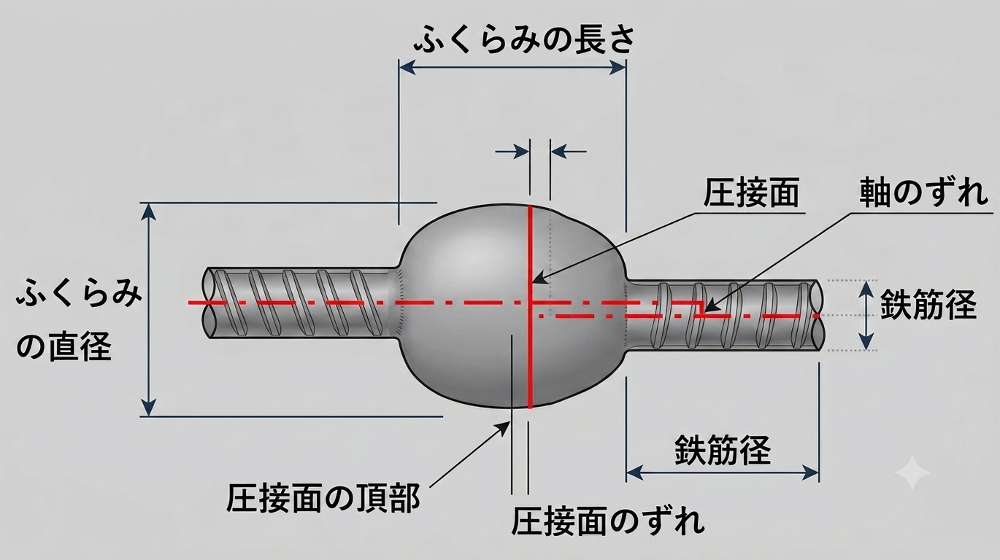

鉄筋の圧接（ガス圧接）とは？資格・径違い・検査・ふくらみの規定を解説
圧接（ガス圧接）とは、圧力と熱を加えて鉄筋を一体化する継手の方法です。細径の鉄筋は重ね継手にしますが、D19以上では圧接の採用が多くなります。この記事では、圧接の意味・技量資格と径の関係・径違いの規定・検査方法・ふくらみ／偏心／ずれの合格基準までを、実務目線で整理します。一級建築士試験にも頻出のテーマです。
- 圧接は圧力＋熱で鉄筋を一体化する継手。引張強度は母材以上。D19以上で多用される。
- 技量資格は1種（D25以下）〜4種（D51以下）。径違いは径差7mm以下、材質は上下1ランク以内。
- 検査は外観検査（全数）と非破壊検査＝超音波探傷（1ロット30か所抜取り）。外観ではふくらみ・軸の偏心量・ずれを確認。
圧接とは？（作業の流れ）
圧接は、圧力と熱を加えて2本の鉄筋を1本に一体化する接合方法です。鉄筋径が小さい場合は重ね継手としますが、D19以上では圧接が多く採用されます。要するに、鉄筋を1本につなぐ代表的な方法のひとつです（継手全体は「鉄筋継手の種類」を参照）。
圧接の作業手順は、おおまかに次のとおりです。
- 圧接面をグラインダー掛けして清掃する。
- 鉄筋の圧接面を加圧する。
- 加熱する（加熱中も加圧を継続。酸素・アセチレン炎を使用）。
- 圧接部に所定のふくらみをつくる。
圧接部の引張強度は、鉄筋母材以上の規格を満足させます。鉄筋を一体化する方法として、圧接と重ね継手はもっとも一般的な手段です。
圧接の資格と径による作業範囲
圧接は技量を要する作業のため、技量資格が設けられています。資格は鉄筋径別に1種〜4種があり、種が上がるほど高い技量が求められ、扱える鉄筋径も太くなります。
| 技量資格 | 作業可能な鉄筋径 |
|---|---|
| 1種 | D25 以下 |
| 2種 | D32 以下 |
| 3種 | D38 以下 |
| 4種 | D51 以下 |
たとえば1種の資格では、D25以下の鉄筋しか圧接できません。太径を扱うほど上位の資格が必要になります。
径違い・材質の違いの規定
圧接は、鉄筋の径や材質が大きく異なると施工できないことがあります。規定は次のとおりです。
- 径の差：7mm 以下
- 材質：上下1ランク以内（例：SD295AとSD345）
- 材質：同径ならSD295AとSD345は圧接可能。ただし2ランク違いのSD295AとSD390は不可。
- 径：D19とD25は圧接可能（差6mm）。D19とD32は不可（差13mm）。
圧接の検査方法（外観・非破壊）
圧接部の検査は、次の2つで行います。
| 検査 | 内容 | 検査数 |
|---|---|---|
| 外観検査 | 圧接部の外観（ふくらみ・偏心・ずれ）を目視・器具で確認 | 全数（圧接箇所すべて） |
| 非破壊検査 | 超音波探傷。外観では分からない内部の欠陥を確認 | 1検査ロットにつき30か所を無作為抽出 |
外観検査はすべての圧接箇所で行い、非破壊検査（超音波探傷）は1ロットから30か所を抜き取って実施します。
外観検査の内容（ふくらみ・偏心・ずれ）
外観検査では、おもにふくらみ・軸の偏心量・ずれの3点を確認します。

ふくらみ
圧接部は熱と圧力でふくらみます。このふくらみが品質の要で、大きいほど良いとされます。
- ふくらみの直径 ≧ 鉄筋径の1.4倍
- ふくらみの長さ ≧ 鉄筋径の1.1倍
満たさない場合は再加熱で補正します。
軸の偏心量
圧接時に鉄筋同士の軸がずれる（偏心する）場合、偏心量はできるだけ小さくします。
- 軸の偏心量 ≦ 鉄筋径の1/5（径が異なるときは細い方の値）
満たさない場合は切り取って再圧接します。
ずれ
圧接部のふくらみ頂部と圧接面（接合面）のずれは、小さいほど良いとされます。
- 圧接面のずれ ≦ 鉄筋径の1/4
満たさない場合は切り取って再圧接します。
混同しやすい用語の整理
圧接と重ね継手
圧接は熱と圧力で鉄筋を一体化する方法、重ね継手は鉄筋を重ねてコンクリートの付着で力を伝える方法です。圧接はD19以上で採用が多く、重ね継手は細径に多く使われます。
外観検査と非破壊検査
外観検査はふくらみ・偏心・ずれを目視・器具で全数確認、非破壊検査は超音波探傷で1ロット30か所を抜き取り、内部欠陥を確認します。
圧接のまとめ表
| 項目 | 内容 | 備考 |
|---|---|---|
| ふくらみの規定 | 直径：鉄筋径の1.4倍以上／長さ：鉄筋径の1.1倍以上 | 不足時は再加熱で補正 |
| 軸の偏心量 | 鉄筋径の1/5 以下 | 超過時は切り取って再圧接 |
| 圧接面のずれ | 鉄筋径の1/4 以下 | 超過時は切り取って再圧接 |
| 径違い | 径差7mm以下 | 材質は上下1ランク以内 |
まとめ
- 圧接は圧力＋熱で鉄筋を一体化する一般的な継手。引張強度は母材以上、D19以上で多用。
- 径違いは径差7mm以下、材質は上下1ランク以内でないと圧接できない。
- ふくらみ（1.4d・1.1d）・偏心（1/5）・ずれ（1/4）は外観検査の合格基準。試験頻出なので確実に覚える。
継手の全体像は「鉄筋継手の種類とは？」、鉄筋を接触させない継手は「あき重ね継手とは？」、RC造の基礎は鉄筋コンクリート造カテゴリにまとめています。
※圧接の資格区分・径違い・検査・合格基準の詳細は、JIS・公共建築工事標準仕様書・各仕様書／規準や年度の改定により異なる場合があります。実務では必ず採用基準の最新版をご確認ください。